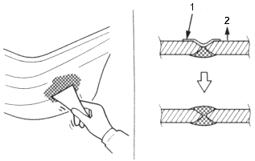
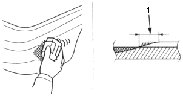
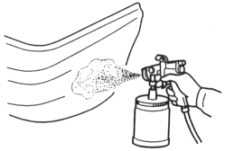
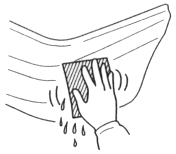

- Filing/Sanding
Apply putty to repair any holes or deep gouges.
- Apply the putty on the damaged are in 2~3 steps.
- Glue aluminium tape on the outside of the bumper, and apply putty from the other side of the bumper.
- Remove the aluminium tape after the putty dries, apply putty from the outside, and fill the hole.
| Use a special polyester putty (Reference) and a putty knife. |

- Aluminium Tape
- Outside
- Sanding
Sand the surface evenly, particularly at the area where the PP material and putty meet.
| Use a flexible block and #240~#400~#600 sandpaper. |

- Featheredging
- Air blowing/degreasing
| Use alcohol, a tack cloth, and wax and grease remover. |
- Spraying primer surfacer
NOTE: Spray the bumper primer (see page 6-17) on the area where the PP material was exposed and around the putty.
- Spray the primer surface wider than the putty and painted surfaces of bumper primer.
- Spray 2~3 coats to get 20~30 microns of thickness.
|

Drying
NOTE: Take care not to let the heat lamp deform the bumper during the drying process.
- Sanding
After drying, wet sand the area of the intermediate coat.
| Use the #600 sandpaper.
NOTE: Do not use less than #600. |

- Air blowing/degreasing
| Use alcohol, a tack cloth, and wax and grease remover. |
Also clean and degrease the surfaces where the masking tape will be attached.